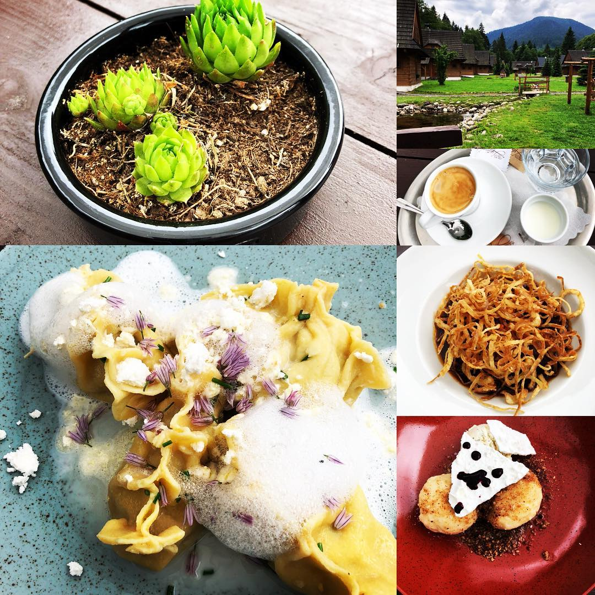

Srnčie ragú podľa @mariett.jmf — Normy Jedál
#pirohyplnenezajacikom#srncieragu #slivkovegulespernikom# @liptovskydvor. #ilovefood #food #foods #foodporn #dnesjem #gastrovikend #🍽☕️🥂🍛#delicious #deliciousfood #culinary #chefs #chef #gastronomy #gastropost #foodphotography #foodporn #foodie #instafood #foodart #foodstagram #foodlover #foodstylingandphotography #foodporn #